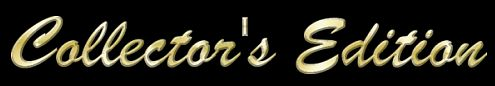

Welcome to this very special edition of ImaNewbie does Britannia, commemorating a web site I created over eighteen
years ago during the very early days of Ultima Online. It contains all of the toons plus additional goodies like character
bios of all the major characters, a selection of toons from my, earlier Diablo Cartoon Pages and more! ...Enjoy!

© Copyright 1998, 1999, 2000, 2001, 2002, 2016, Mike Hanley a.k.a. Tryon - As far as you using any of the stuff in this collection in any way, shape, or form, without my express permission in writing, let me just say this: "DON'T!"
The graphics for the ImaNewbie does Britannia comics are created using modified screenshots from the groundbreaking online game, Ultima Online. Ultima Online is a registered trademark of Electronic Arts Inc.